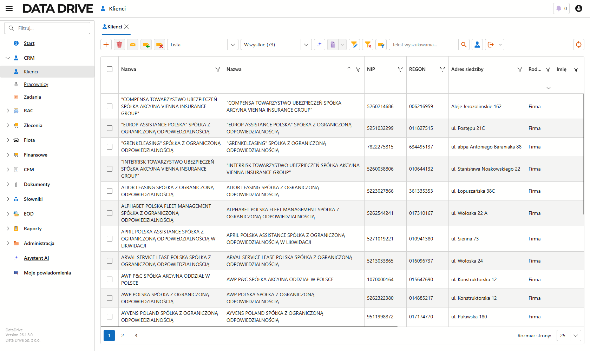
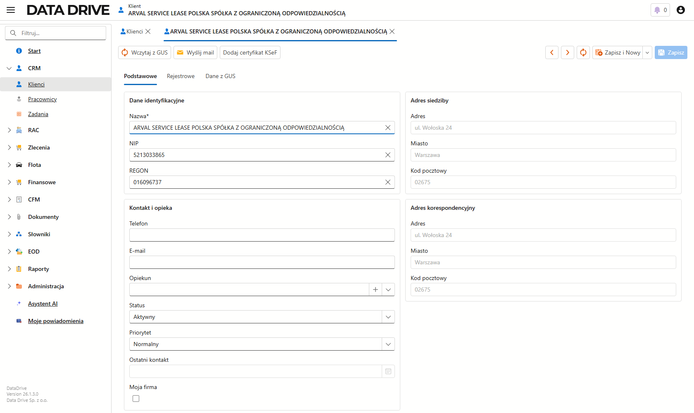
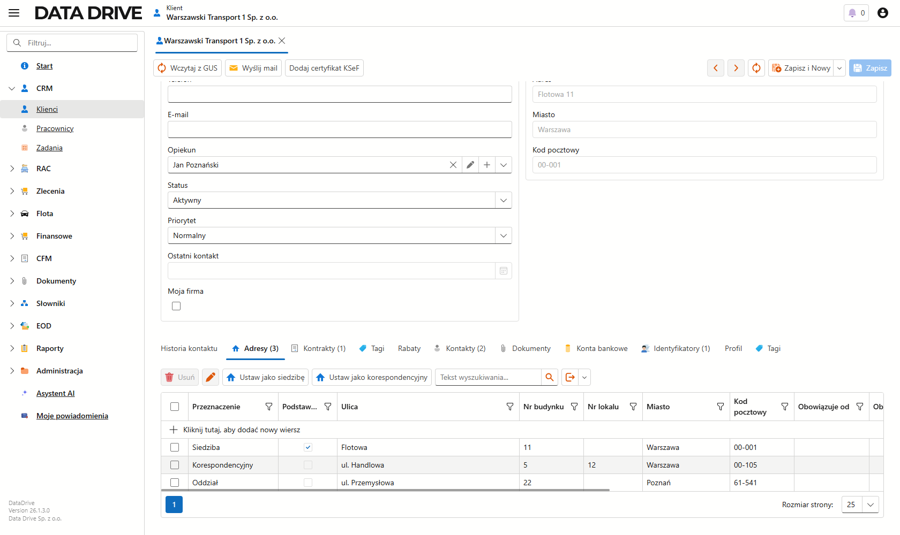
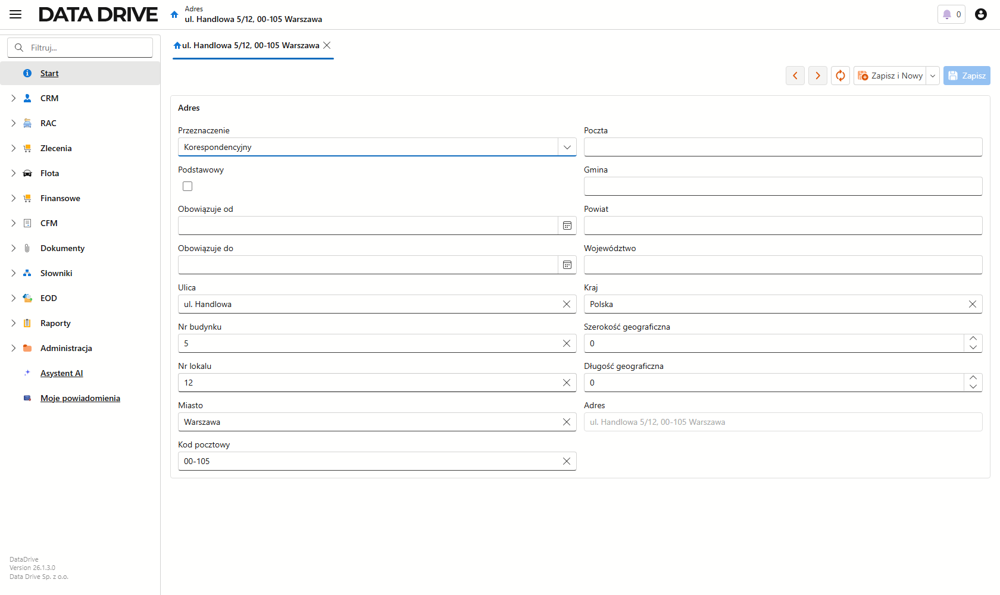
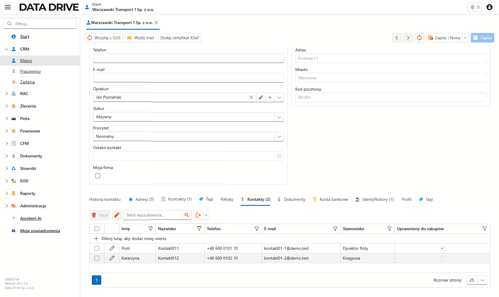
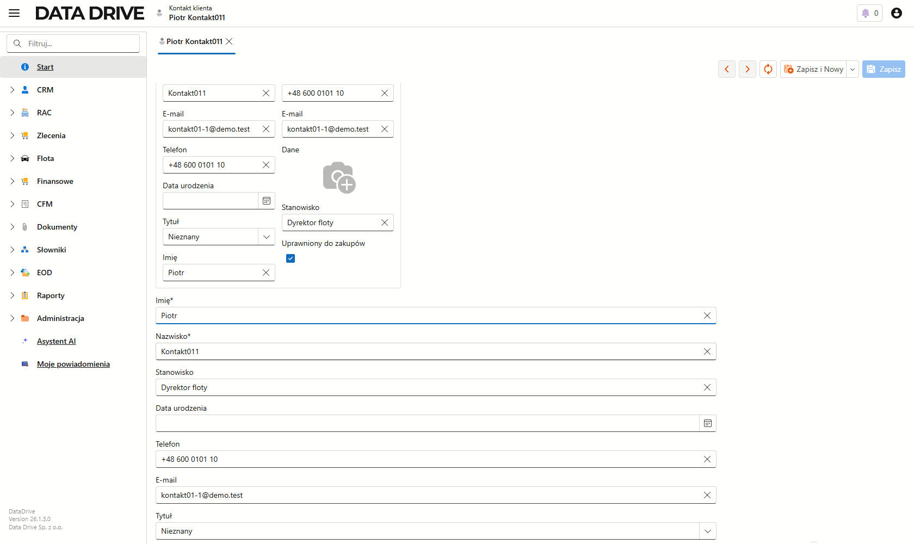
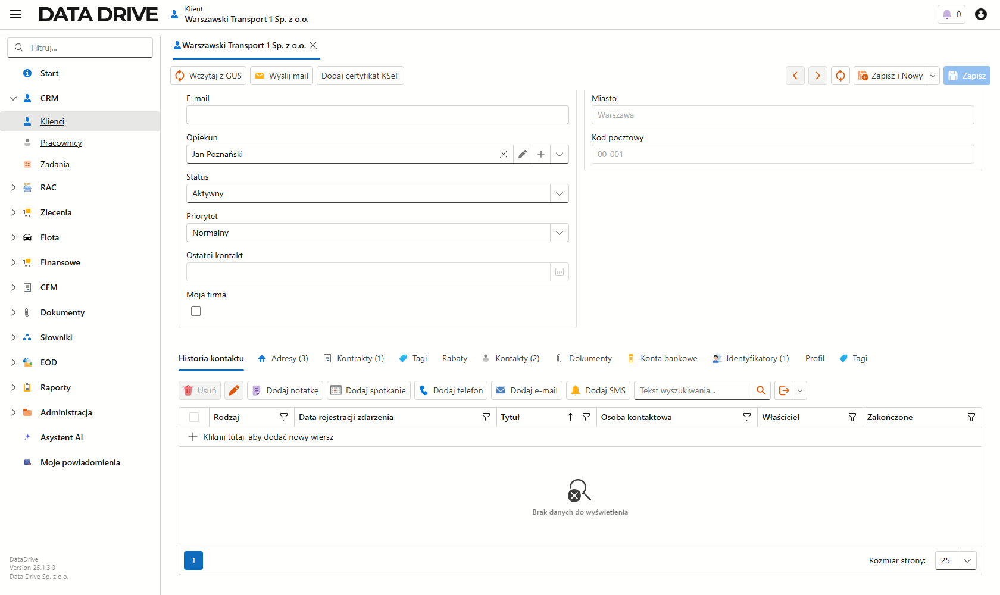
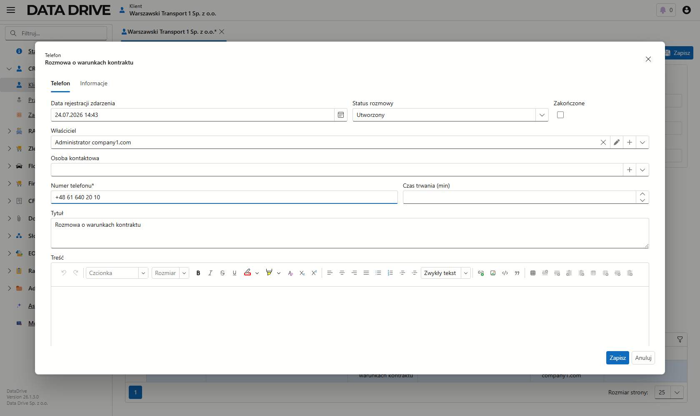
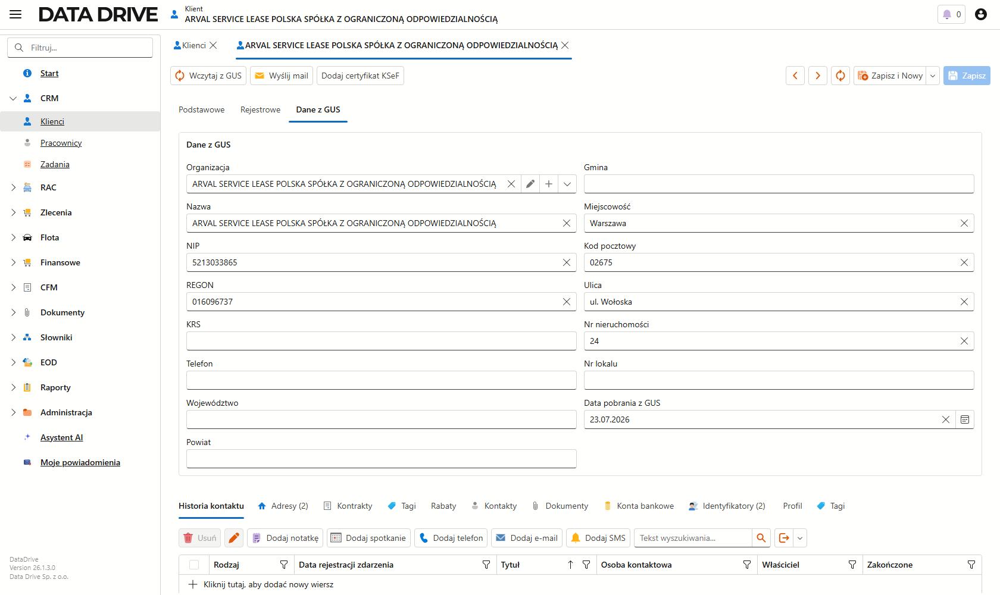

Klienci (CRM)
Moduł klientów prowadzi kartotekę kontrahentów, z którymi współpracujesz. Jeden rekord łączy dane rejestrowe, adresy, osoby kontaktowe i historię rozmów, a dane z tej kartoteki podstawiają się później na fakturze jako nabywca. Numer NIP wystarczy, żeby pobrać resztę danych firmy prosto z rejestru GUS.
O module klientów
Moduł otwierasz z lewego menu, w grupie CRM → Klienci. Każdy klient ma jedną kartę, a na niej kilka zakładek: dane podstawowe i identyfikacyjne, dane rejestrowe, dane pobrane z GUS, adresy, osoby kontaktowe oraz historię kontaktu. Rodzaj klienta decyduje o tym, które pola są wymagane — inaczej opisujesz firmę, inaczej osobę fizyczną.
Lista klientów
Handlowiec zaczyna pracę tutaj. Ekran zbiera wszystkich kontrahentów i pokazuje ich najważniejsze dane w jednej siatce, więc szybko odnajdziesz właściwą firmę.

- Nazwa
- Pełna nazwa firmy albo imię i nazwisko osoby. Po niej rozpoznajesz klienta na wszystkich listach i dokumentach.
- NIP, REGON
- Numery identyfikacyjne kontrahenta. NIP wiąże klienta z rejestrem GUS i pozwala pobrać dane jednym kliknięciem.
- Adres siedziby
- Adres rejestrowy firmy. Wypełnia się sam po imporcie z GUS.
- Rodzaj
- Firma, osoba fizyczna albo obcokrajowiec. Od tej wartości zależy, które pola karty są wymagane.
Klienta wyszukasz w polu Tekst wyszukiwania nad listą, a kolumny filtrujesz ikoną lejka i sortujesz kliknięciem nagłówka.
Dodanie nowego klienta
Nowego kontrahenta możesz opisać ręcznie albo — jeśli znasz jego NIP — pobrać dane z GUS i tylko je uzupełnić. Najpierw ręcznie, potem pokażemy szybszą drogę.

Aby dodać klienta ręcznie, wykonaj następujące kroki:
- Na liście klientów kliknij Nowy na górnym pasku.
- W polu Rodzaj wybierz, czy opisujesz firmę, osobę fizyczną, czy obcokrajowca.
- Wpisz Nazwę, a dla firmy dodatkowo NIP i REGON. Dla osoby fizycznej podaj imię, nazwisko i PESEL.
- Uzupełnij dane kontaktowe w sekcji Kontakt i opieka: telefon, e-mail oraz Opiekuna, czyli pracownika prowadzącego klienta.
- Zapisz kartę skrótem Ctrl+Shift+S albo przyciskiem Zapisz.
Klient pojawi się na liście, a adres w pasku przeglądarki zmieni się na adres jego karty. Od tej chwili możesz wskazywać go jako nabywcę na fakturach.
- Status
- Mówi, czy współpraca z klientem trwa. Wartość Aktywny oznacza bieżącego kontrahenta, Zawieszony — chwilowo wstrzymanego.
- Priorytet
- Waga klienta w CRM: normalny, wysoki, gorący albo niski. Ułatwia sortowanie i skupienie się na najważniejszych firmach.
- Opiekun
- Pracownik Twojej firmy odpowiedzialny za kontakt z klientem.
- Moja firma
- Zaznacz tylko dla własnej organizacji. Taki rekord znika z typowych list klientów i służy jako sprzedawca na fakturach.
Adresy klienta
Jeden klient prowadzi kilka adresów o różnym przeznaczeniu — siedzibę, adres korespondencyjny, miejsce dostawy czy oddział. Wszystkie zbiera zakładka Adresy na dole karty, a każdy wiersz opisuje jego rolę w polu Przeznaczenie. Adres siedziby i korespondencyjny z górnej części karty (oraz te pobrane z GUS) trafiają na tę listę automatycznie.

- Przeznaczenie
- Rola adresu: Siedziba, Rozliczeniowy, Dostawa, Korespondencyjny, Oddział albo Inny. Po niej aplikacja wie, którego adresu użyć na dokumencie i w wysyłce.
- Podstawowy
- Wskazuje główny adres danego rodzaju. Zaznaczony wiersz aplikacja traktuje jako domyślny.
- Ulica, Nr budynku, Nr lokalu
- Dane lokalu. Numer budynku i lokalu prowadzisz osobno, więc adres pozostaje czytelny na fakturze i liście.
- Miasto, Kod pocztowy
- Miejscowość i kod. Kod zapisujesz w formacie 00-000.
- Obowiązuje od, Obowiązuje do
- Okres ważności adresu. Wypełnij je, gdy adres jest tymczasowy albo zmienił się w czasie współpracy.
Podwójne kliknięcie wiersza otwiera widok szczegółów adresu z pełnym zestawem pól — w tym danymi administracyjnymi, których nie widać w siatce.

- Poczta, Gmina, Powiat, Województwo
- Dane administracyjne adresu. Przydają się w korespondencji i w zestawieniach terytorialnych.
- Kraj
- Kraj adresu. Domyślnie Polska.
- Szerokość, Długość geograficzna
- Współrzędne punktu. Aplikacja uzupełnia je przy geokodowaniu adresu.
- Adres
- Zbiorcze pole tekstowe, które aplikacja składa z ulicy, numerów, kodu i miasta. Widzisz je na listach i dokumentach.
Aby dodać kolejny adres, wykonaj następujące kroki:
- Na karcie klienta przejdź do zakładki Adresy.
- Kliknij Kliknij tutaj, aby dodać nowy wiersz nad siatką.
- W polu Przeznaczenie wybierz rolę adresu, na przykład Korespondencyjny.
- Wpisz Ulicę, Nr budynku, Miasto i Kod pocztowy.
- Zapisz kartę przyciskiem Zapisz.
Nowy adres pojawi się na liście z przypisanym przeznaczeniem.
Osoby kontaktowe
Przy kliencie prowadzisz listę osób, z którymi rozmawiasz — z telefonem, adresem e-mail i stanowiskiem. Dzięki temu wiesz, do kogo dzwonić w sprawie floty, a do kogo w sprawie faktury. Osoby zbiera zakładka Kontakty.

- Imię, Nazwisko
- Dane osoby. Po nich rozpoznajesz kontakt na liście i w historii rozmów.
- Telefon, E-mail
- Bezpośrednie dane kontaktowe do tej osoby.
- Stanowisko
- Rola osoby u klienta, na przykład Dyrektor floty albo Księgowa.
- Uprawniony do zakupów
- Zaznacz, gdy osoba decyduje o zakupach. Wyróżnia to decydentów spośród pozostałych kontaktów.
Podwójne kliknięcie wiersza otwiera pełną kartę osoby kontaktowej, na której uzupełnisz dane wykraczające poza siatkę.

- Tytuł
- Tytuł grzecznościowy osoby, na przykład Pan albo Pani.
- Data urodzenia
- Data urodzenia osoby kontaktowej.
- Zdjęcie
- Fotografia osoby, którą wgrywasz z pliku.
- Opis
- Miejsce na dodatkowe notatki o osobie.
Aby dodać osobę kontaktową, wykonaj następujące kroki:
- Na karcie klienta przejdź do zakładki Kontakty.
- Kliknij Kliknij tutaj, aby dodać nowy wiersz nad siatką.
- Wpisz Imię, Nazwisko, Telefon, E-mail oraz Stanowisko.
- Zaznacz Uprawniony do zakupów, jeśli osoba podejmuje decyzje zakupowe.
- Zapisz kartę.
Osoba trafi na listę kontaktów i od tej chwili możesz przypisać ją do zdarzenia w historii kontaktu.
Historia kontaktu
Każdą rozmowę telefoniczną, notatkę, spotkanie i wiadomość zapisujesz w Historii kontaktu. Im dokładniej ją prowadzisz, tym wierniejszy obraz współpracy zobaczysz w polu Ostatni kontakt na karcie klienta. Każdy wpis ma swój rodzaj, więc na liście od razu odróżnisz telefon od spotkania czy e-maila.

Rodzaj zdarzenia wybierasz przyciskiem na pasku listy. Dostępne są:
- Dodaj telefon
- Rozmowa telefoniczna — z numerem i czasem trwania.
- Dodaj notatkę
- Krótki wpis, na przykład ustalenie albo obserwacja o kliencie.
- Dodaj spotkanie
- Spotkanie z klientem — z miejscem i statusem.
- Dodaj e-mail
- Wiadomość e-mail — z adresem odbiorcy.
- Dodaj SMS
- Wiadomość SMS — z numerem telefonu.
Aby zarejestrować zdarzenie, wykonaj następujące kroki:
- Na karcie klienta przejdź do zakładki Historia kontaktu.
- Na pasku wybierz rodzaj zdarzenia, na przykład Dodaj telefon.
- W oknie wpisz Tytuł oraz pola zależne od rodzaju — dla telefonu podaj Numer telefonu, dla e-maila Adres odbiorcy, dla spotkania Miejsce.
- Opcjonalnie wskaż Osobę kontaktową z listy kontaktów klienta i opisz przebieg w polu Treść.
- Kliknij Zapisz.

- Data rejestracji zdarzenia
- Kiedy rozmowa się odbyła. Aplikacja podstawia bieżącą datę i godzinę, ale możesz je poprawić.
- Status rozmowy
- Etap obsługi zdarzenia, na starcie Utworzony.
- Zakończone
- Zaznacz, gdy sprawa z tej rozmowy jest domknięta i nie wymaga dalszych działań.
- Właściciel
- Pracownik odpowiedzialny za kontakt. Aplikacja wpisuje osobę zalogowaną.
- Osoba kontaktowa
- Rozmówca po stronie klienta. Wybierasz go spośród osób kontaktowych tego klienta.
- Numer telefonu
- Numer, pod którym odbyła się rozmowa. Pole wymagane.
- Czas trwania (min)
- Długość rozmowy w minutach. Przydaje się przy rozliczaniu obsługi klienta.
- Tytuł
- Krótkie podsumowanie tematu, na przykład Rozmowa o warunkach kontraktu. To ono pokazuje się na liście historii.
- Treść
- Notatka z rozmowy w edytorze tekstu sformatowanego. Możesz wypunktować ustalenia i wkleić tabelę.
Zdarzenie pojawi się na liście z odpowiednim rodzajem, a data trafi do pola Ostatni kontakt.
Import danych z GUS
Zamiast przepisywać dane firmy ręcznie, pobierz je z bazy GUS na podstawie samego numeru NIP. To najszybsza droga do kompletnej, poprawnej kartoteki.

- Organizacja, Nazwa
- Pełna nazwa firmy z rejestru REGON. Aplikacja przepisuje ją dokładnie tak, jak zapisał ją GUS.
- NIP, REGON, KRS
- Numery identyfikacyjne pobrane z rejestru. Pusty KRS oznacza, że podmiot nie podlega wpisowi do Krajowego Rejestru Sądowego.
- Telefon
- Numer zgłoszony do rejestru. Bywa pusty, bo nie każda firma go podaje.
- Województwo, Powiat, Gmina, Miejscowość
- Adres administracyjny siedziby z rejestru.
- Kod pocztowy, Ulica, Nr nieruchomości, Nr lokalu
- Adres pocztowy siedziby. Aplikacja rozbija go na osobne pola, dzięki czemu da się po nich filtrować.
- Data pobrania z GUS
- Kiedy dane zostały pobrane. Po tej dacie poznasz, czy warto odświeżyć wpis akcją Wczytaj z GUS.
Aby wczytać dane z GUS, wykonaj następujące kroki:
- Na karcie klienta wpisz numer NIP bez myślników.
- Na górnym pasku kliknij Wczytaj z GUS.
- W oknie Wczytywanie z GUS potwierdź numer i kliknij Wczytaj.
- Sprawdź uzupełnione pola i zapisz kartę.
Aplikacja połączy się z rejestrem i wypełni nazwę, REGON oraz adres siedziby. Pełny zestaw danych — forma prawna, kody PKD, województwo i powiat — znajdziesz na zakładce Dane z GUS, razem z datą pobrania.